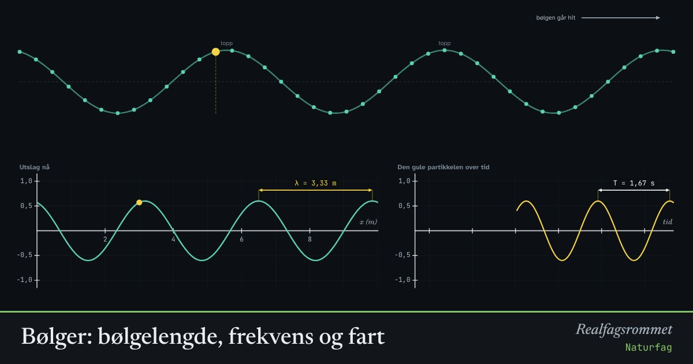

Bølger: bølgelengde, frekvens og fart
En bølge frakter energi, men ikke stoff. Hver bit av mediet svinger bare fram og tilbake mens mønsteret beveger seg videre. Bølgefarten er bølgelengden ganger frekvensen.
Start animasjonen
Formler
Om animasjonen
Bølgelengden er avstanden mellom to bølgetopper. Frekvensen er hvor mange svingninger hver partikkel gjør per sekund, målt i hertz (Hz). Perioden er tiden én svingning tar.
På én periode flytter bølgen seg nøyaktig én bølgelengde. Derfor er farten .
I en transversal bølge svinger partiklene på tvers av retningen bølgen går, som på et tau eller på vann. I en longitudinal bølge svinger de fram og tilbake langs retningen. Lyd er en longitudinal bølge med fortetninger og fortynninger av lufta.
Bølgefarten bestemmes av mediet. Lyd går omtrent 340 m/s i luft og 1500 m/s i vann. Lys og radiobølger går 300 000 km/s. Øker du frekvensen uten å endre mediet, blir bølgelengden kortere.
Prøv dette
- Doble frekvensen. Hva skjer med bølgelengden? Hva skjer med farten?
- Mål perioden på grafen og regn ut frekvensen. Stemmer det?
- En tone på 440 Hz går i luft med 340 m/s. Hva er bølgelengden?
- Flytter den gule partikkelen seg bortover? Hva er det som faktisk beveger seg med bølgen?
Kompetansemål
- Naturfag: Sentrale bølgefenomener